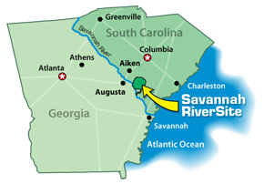

Careers
Robotics Engineering in Georgia
Robotics engineers are responsible for designing, programing, building and maintaining robotic systems for use in manufacturing, transortation, healthcare, military and the service industries. Robotics engineers are required to integrate vision, motors, controls and remote communications into robotic systems.
Starting salaries for successful candidates begin at $58,000 annually for Bachelors of Science majors. Advanced degree candidates may receive additional compensation based on level of education and work experience.
Georgia Universities with Robotics Programs
We interviewed Georgia Tech Robics Professor Magnus Egerstedt following the snow storm that hit Atlanta in January of 2014. We learned about his team's use of swarmbots to monitor hazadous radition leaks in Japan, and
talked about the use of robots in finding missing people and aiding victims of natural and manmade disasters with food and supplies. Fire up the drones, we have hungry motorists to feed on Atlanta's icy freeways!
Additional areas of study for ocean-based recyclers
Biology, Oceanology and Marine Science
Recycling at sea will rely heavily on the expertise of marine scientists who specialize in sea life and ocean currents.
Waste Management Engineering / Environmental Engineers
Waste Management Engineers research, design, plan and perform engineering duties in the prevention, control, and remediation of environmental hazards. Positions requires knowledge of plastics, chemistry and environmental impact.
Plasma Arc Specialists - Electrical Engineers
At the Savannah River Site (SRS), researchers from Georgia Tech and Clemson University are using a plasma arc similar to the one envisioned for Recycling Island to breakdown hazadous waste onsite.
Integral Fast Reactor (IFR) - Nuclear Engineers
By 2030, Integral Fast Reactors and other Generation IV reactor technology will become the preferred disposal method for spent nuclear fuel currently stored around the world.

The future of recycling technology is being researched on the Georgia–South Carolina border at the Savannah River Site (SRS). GlobalSecurity.org reports that the U.S. Department of Energy is funding research projects at SRS with Georgia Tech and Clemson University "which include plasma arc treatment of solid low-level radioactive waste, vitrification of various waste forms using a portable vitrification unit, noble metal reclamation from electronic components. and waste stabilization using several different binders."
Next, find out how we envision a Georgia degree in robotics being applied to ocean-based recycling in the future: